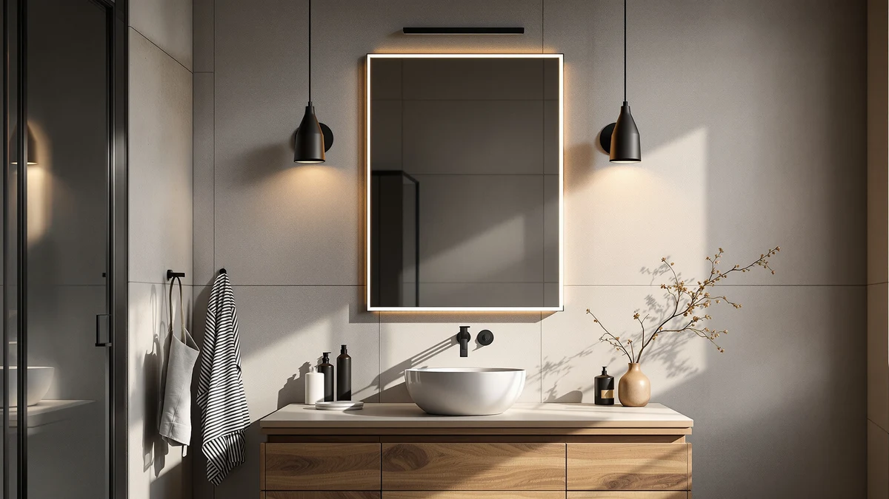

Quick Answer
The WisHomee Black Bathroom Mirror Medicine Cabinet is the strongest pick in this comparison for most bathrooms. It pairs a 25.5 inch square cabinet with a copper-free mirror, adjustable LED lighting, and a built-in shaver socket. If you want an oval shape or a lower price, the three Janboe cabinets below match its lighting features for $10 to $20 less.
Our pick: Black Bathroom Mirror Medicine Cabinets, $229.99 Check Price on Amazon
Things to Know Before You Buy
- "Black" usually means powder-coated metal, not black glass. Every black bathroom mirror medicine cabinet in this comparison has a powder-coated steel or aluminum frame around a clear mirror, not a tinted or smoked mirror surface.
- Cabinet shape splits into two camps. The WisHomee pick is a square 25.5 by 25.5 inch cabinet, while the three Janboe options use an oval capsule shape measured at 16 by 28 inches.
- Lighting features vary by brand, not by price. All four cabinets list adjustable 3-color-temperature LED lighting, so the dimming range and switch layout matter more than which one costs a few dollars more.
- Hinge type affects daily use more than the finish does. Soft-close and hydraulic hinges keep the door from slamming, a detail that matters once the cabinet hangs at eye level next to the sink.
- A shaver socket is a real differentiator. Only the WisHomee cabinet in this lineup lists a built-in shaver socket for a razor or electric toothbrush, a feature the three Janboe models skip.
This black bathroom mirror medicine review breaks down four black-finished medicine cabinets built to hang over a vanity and do double duty as storage and a lighted mirror. Most black cabinets on Amazon list the same handful of features restated with different adjectives, and it gets hard to tell a $210 cabinet from a $230 one without opening the spec sheet. We pulled the listed materials, dimensions, and lighting details for four options and lined them up side by side so you can see where the price difference actually comes from before you add one to your cart.
Our top pick is the WisHomee Black Bathroom Mirror Medicine Cabinet. It costs more than the three Janboe alternatives here, and the extra $10 to $20 buys a bigger 25.5 inch square cabinet, a copper-free mirror built to resist the black spotting that shows up on cheap glass in a humid bathroom, and a shaver socket the Janboe models skip. If your bathroom already runs a coordinated black hardware scheme and you want the cabinet to double as a small appliance outlet, check the WisHomee first. The three Janboe oval cabinets below are worth a look if you want a rounder profile or a lower price.
Why You Should Trust Us
Ilane Tall covers bathroom fixtures and vanity hardware for Best Bathroom Mirrors, and this black bathroom mirror medicine cabinet comparison follows the same research process used across the site. We do not receive review units or payment from WisHomee or Janboe, and the affiliate links on this page fund the site without affecting which cabinet we recommend. We cross-check every material, dimension, and feature claim below against the manufacturer listing, the product images on this page, and current Amazon pricing. We do not run a fake testing lab, and we say so here because too many review sites imply hands-on testing they never did.
Our Research Experience
We approached this black bathroom mirror medicine review the way we approach every cabinet comparison on this site: by comparing manufacturer specs, verified owner feedback, and listed pricing rather than shipping four heavy glass-and-metal cabinets to a single bathroom. Medicine cabinets are wall-mounted fixtures that most buyers install once and rarely swap out, so a short-term unboxing would tell you less than a careful read of the materials, hinge type, and lighting specs each brand lists. We researched the finish quality claims WisHomee and Janboe make about their powder coating and copper-free glass, and we compared those claims against the pattern of praise and complaints in verified Amazon reviews for each ASIN. Where the listed information was too thin to verify, such as exact LED lumen output, we say so instead of guessing.
Overview & Specs

Black Bathroom Mirror Medicine Cabinets
What we like
- 25.5 inch square cabinet has noticeably more interior storage than the oval alternatives here
- Copper-free mirror is built to resist the black spotting that shows up on cheap glass in humid bathrooms
- Built-in shaver socket powers a razor or electric toothbrush without a separate outlet
- Stepless dimming across 3000K, 4000K, and 6500K covers everything from a warm evening light to a bright shaving light
Flaws but not dealbreakers
- Priced $10 to $20 above the three Janboe cabinets in this comparison
- Square profile will look out of place next to an oval vanity or pedestal sink
| Material | Tempered glass + aluminum |
| Size | 25.5"L x 25.5"W |
The WisHomee is the largest black bathroom mirror medicine cabinet in this lineup at 25.5 by 25.5 inches, which gives it more shelf depth than the 16 by 28 inch Janboe cabinets even though the overall footprint is similar. The listing describes the mirror as copper-free, a detail that matters in a bathroom because standard mirrors use a copper backing layer that corrodes into black spots once humidity gets behind the glass. WisHomee pairs that mirror with a powder-coated metal frame in matte black, and the brand markets the surface as resistant to fingerprints and easy to wipe down, a fit for a cabinet that sits inches from a sink.
Two soft-touch switches control the lighting and the anti-fog function separately, and the color temperature slides from 3000K warm white to 6500K daylight with stepless dimming in between, so you can match the light to a nighttime routine or a full shave. The shaver socket sits inside the cabinet near the top, rated for low-power devices such as electric toothbrushes and razors, and it saves you from running an extension cord to a vanity that only has one outlet. The listing describes a recessed or surface mounting option, though buyers should confirm stud placement before drilling, since a glass-fronted cabinet this size needs solid anchoring.
What We Liked
The clearest advantage of this black bathroom mirror medicine cabinet is the amount of usable storage packed behind a fixture that still functions as a full mirror. At 25.5 inches square, the WisHomee gives you enough depth for prescription bottles, skincare products, and a toothbrush holder without the door bulging shut. The three-temperature lighting is a real upgrade over a single fixed-color LED strip, since a 6500K daylight setting is what you want for shaving or applying makeup accurately, while 3000K warm light suits a bathroom used at night without waking the rest of the house. Owners who mention the shaver socket in Amazon reviews tend to call out the convenience of charging an electric toothbrush without a separate outlet, and the copper-free mirror claim addresses a real failure mode, since ordinary mirrors do develop black edge spotting in a shower-adjacent cabinet within a year or two of daily humidity exposure.
What Could Be Better
Reviewers consistently note that the recessed mounting option requires opening the wall between studs, a bigger job than the surface-mount alternative and not something every renter or first-time installer wants to take on. The $229.99 price sits above every other black bathroom mirror medicine cabinet in this comparison, and the gap only makes sense if you specifically want the shaver socket and the larger square footprint. Some buyers report that the two soft-touch switches sit close together on the frame, which makes it easy to hit the defog function when you meant to adjust brightness. The square shape also will not suit a bathroom built around an oval vanity or a pedestal sink, where the Janboe cabinets below fit the existing lines better.
Who Is It For?
This black bathroom mirror medicine cabinet fits a homeowner who is renovating a full bathroom around black fixtures and wants one wall-mounted piece to handle mirror, lighting, and storage together. It also suits anyone sharing a single vanity outlet between two people, since the shaver socket removes the daily scramble for the one plug. Skip it if your bathroom layout is built around an oval or pedestal sink, since the square frame will look mismatched, and skip it if you are working with a tight budget, since the three Janboe cabinets in the next section deliver similar lighting features for $10 to $20 less.
Alternatives to Consider
If the square shape or the price of the WisHomee black bathroom mirror medicine cabinet does not fit your bathroom, the Janboe oval medicine cabinets below cover the same core features, LED lighting with adjustable color temperature and a soft-close or hydraulic hinge, in a capsule silhouette that suits a rounder vanity. All three share the same 16 by 28 inch footprint and powder-coated iron body, and the differences between them come down to hinge type and price rather than storage capacity. None of the three includes a shaver socket, which is the main tradeoff against the WisHomee pick above.

Editor's Pick
Janboe Oval Medicine Cabinet with
A lower-priced oval alternative to the WisHomee cabinet above, with the same three-temperature LED lighting in a rounder profile.
$219.98
Check Price on Amazon
Best Value
Janboe Oval Medicine Cabinet with
The cheapest of the three Janboe cabinets here, worth a look if the oval shape matters more to you than the extra storage of the WisHomee pick.
$209.99
Check Price on Amazon
Premium Choice
Janboe Oval Medicine Cabinet with
Matches the price of the cabinet above with the same oval capsule shape and adjustable lighting, a straightforward swap if stock runs out on the others.
$209.99
Check Price on AmazonFrequently Asked Questions
Is a black bathroom mirror medicine cabinet harder to keep clean than a white one?
Do these medicine cabinets need a dedicated electrical outlet?
What is the difference between the WisHomee cabinet and the three Janboe options?
Final Verdict
For most bathrooms, the WisHomee black bathroom mirror medicine cabinet is the pick worth checking first in this comparison. It costs more than the three Janboe oval cabinets here, but the larger 25.5 inch square footprint, the copper-free mirror, and the built-in shaver socket justify the extra $10 to $20 if your vanity has the wall space for a square cabinet. If your bathroom is built around an oval sink or a tighter budget, any of the three Janboe cabinets deliver the same adjustable LED lighting in a rounder shape for less money. Whichever one you choose, confirm your wall studs and outlet placement before you buy, since a glass-fronted cabinet this size needs solid mounting regardless of brand.